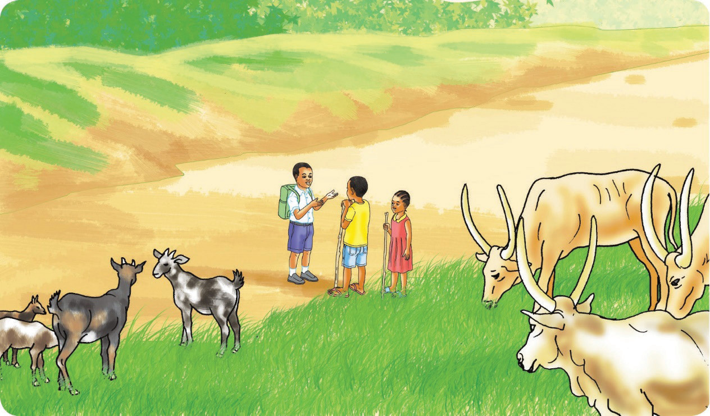

hatuendi. Baba ametuambia tukachunge ng’ombe. Yeye anakwenda kwenye mkutano.” Kayande aliwaambia, “Si vyema kukosa kwenda shuleni. Kusoma ni haki yetu.”
Shuleni mwalimu aliita majina. Jina la Jema lilipoitwa, Kayande alijibu, “Amekwenda kuchunga ng’ombe.” Mwalimu na wanafunzi walisikitika. Mwalimu akasema, “Mwanafunzi asipofika shuleni anakosa haki yake ya kupata elimu na atakuwa mjinga.” Mwanafunzi mmoja alimuuliza mwalimu, “Haki za mtoto ni zipi?” Mwalimu akajibu, “Kila mtoto ana haki ya kupata elimu, kupendwa na kusikilizwa.” Mwalimu aliendelea kusema kuwa, “Mwanafunzi anapohudhuria masomo shuleni, hujifunza mambo mengi. Pia, ataweza kujiamini na kufanikiwa katika maisha yake.”

Mwanafunzi mmoja alimuuliza mwalimu, “Wazazi wakituzuia kuja shuleni tufanye nini?” Mwalimu akajibu, “Mnatakiwa kuwaagiza wenzenu kutoa taarifa hapa shuleni.” Kayande alimuuliza tena mwalimu, “Wazazi hao watafanywa nini?” Mwalimu akajibu, “Wataitwa shuleni kujieleza. Aidha, wataelezwa umuhimu wa